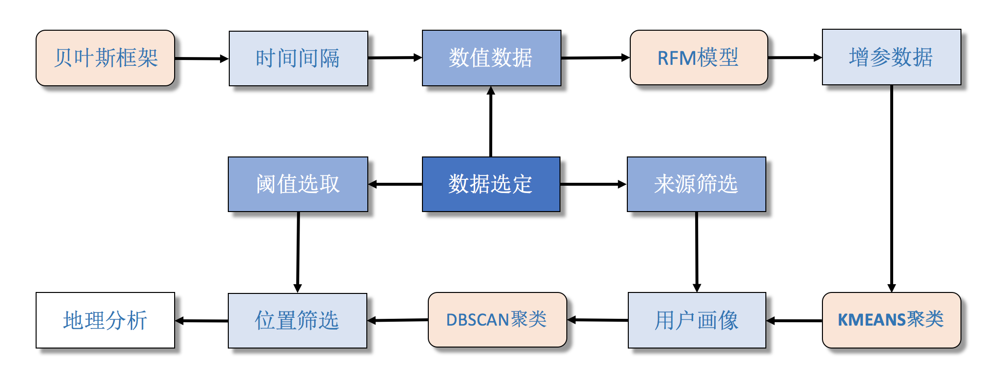

帮助指南
总述：
基本分析：
用户选定了相关数据后，系统会展示出地理范围以及时间序列上的数据分布情况。
该模块是本系统对市面上地理分析以及数据分析整合，得到的关于这两个维度切入点，后面的流程试验均为本系统首创。

1.时序划分步骤：
数据波动性太强，直接进行数据实验，会影响最终结果，所以最好事先对数据时序进行划分。点击时序分析按钮，系统会完成整个实验过程。


本阶段使用的机器学习算法是在贝叶斯框架中，通过计算变点的后验概率，从而达到时序划分的效果。
2.模式筛选步骤：
首先查看各时序范围内，确定大体数值走向，并查看增参模型后，划分的时序范围内的多种模式，可以选择对何种模式下的数据进行后续的地理数据分析。

基于时序划分，采用本系统首创的RFM模型增参（作者论文发表），并利用聚类算法确定多种模式，便于有针对性的对地理区域进行探究。

3.参数设定步骤：
本系统提供了三个类别的地理区域参数设定：时序首尾的位置重要性选取，区域作用范围，区域最少作用点。

4.价值区域选定：
使用聚类算法系统反馈最终的价值区域。
 }})